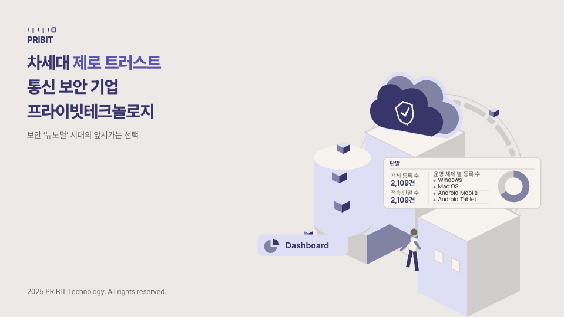
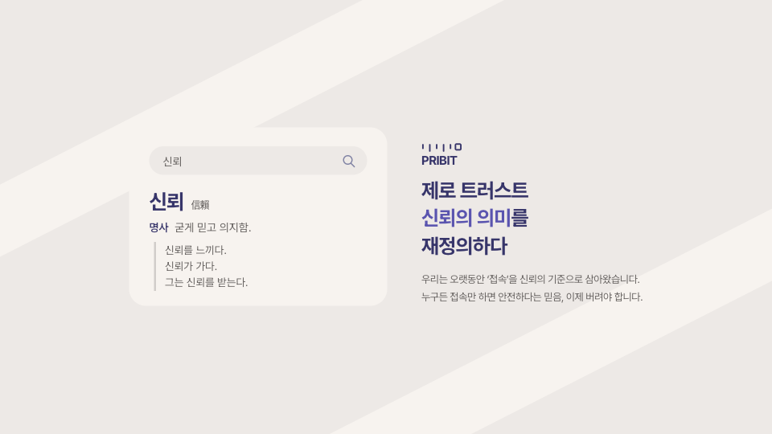
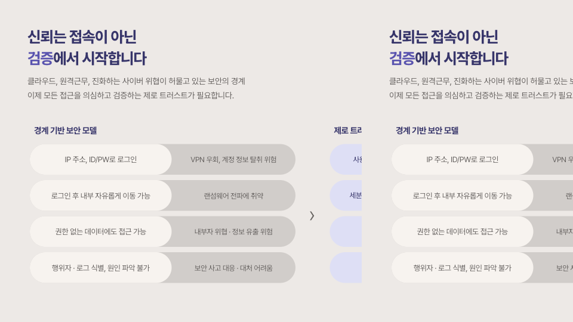
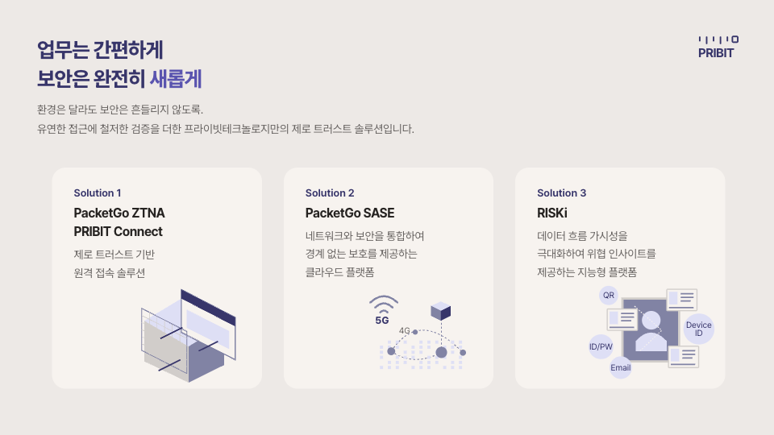
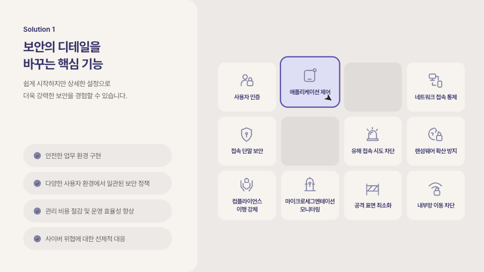
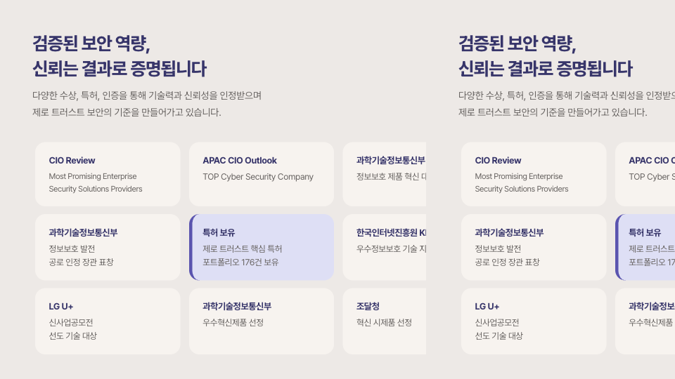

차세대 제로 트러스트 통신 보안 기업
좌측 상단 3행 제목과 우측 하단 클라우드·대시보드 입체 장면 · 좌측 상단 3행 제목과 우측 하단 클라우드·대시보드 입체 장면

제로 트러스트, 신뢰의 의미를 재정의하다
왼쪽 사전 검색 카드와 오른쪽 로고·3행 선언문을 중앙 높이에 배치 · 왼쪽 사전 검색 카드와 오른쪽 로고·3행 선언문을 중앙 높이에 배치

신뢰는 검증에서 시작합니다
4행 비교표: 좌측 두 칸 알약형 경계 보안 모델과 우측 단일 검증 모델 · 4행 비교표: 좌측 두 칸 알약형 경계 보안 모델과 우측 단일 검증 모델

업무는 간편하게, 보안은 완전히 새롭게
동일 크기의 3열 솔루션 카드, 상단 설명과 하단 우측 개념 일러스트 · 동일 크기의 3열 솔루션 카드, 상단 설명과 하단 우측 개념 일러스트

보안의 디테일을 바꾸는 핵심 기능
좌측 41% 설명 패널과 4개 효과 목록, 우측 4×3 기능 타일 및 두 빈칸 · 좌측 41% 설명 패널과 4개 효과 목록, 우측 4×3 기능 타일 및 두 빈칸

검증된 보안 역량, 신뢰는 결과로 증명됩니다
4열 3행 성과 카드 11개와 우측 상단 행성 일러스트, 특허 카드를 단독 강조 · 4열 3행 성과 카드 11개와 우측 상단 행성 일러스트, 특허 카드를 단독 강조